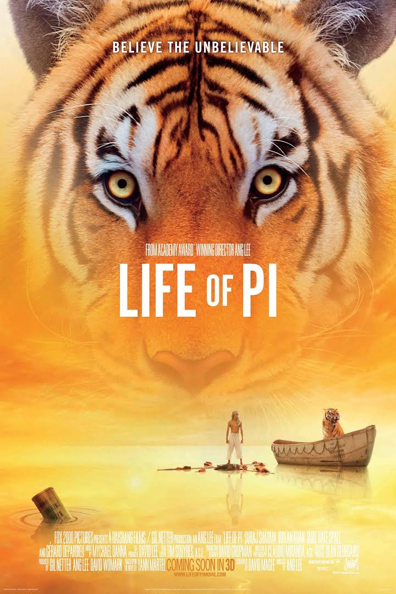

The Terminal
Viktor Navorski gets stranded at an airport when a war rages in his country.He is forced by the officials to stay at the airport until his original identity is confirmed.Initial release: 9 June 2004 (Beverly Hills) Director: Steven Spielberg Story by: Andrew Niccol; Sacha Gervasi Languages: English, Bulgarian Music by: John Williams

Release date: 23 November 2012 (India) Director: Ang Lee Adapted from: Life of Pi
Life of Pie
Pi Patel finds a way to survive in a lifeboat that is adrift in the middle of nowhere. His fight against the odds is heightened by the company of a hyena and a male Bengal tiger.Release date: 23 November 2012 (India) Director: Ang Lee Adapted from: Life of Pi

Mucize
In 1961, a teacher in a remote village inspires the villagers to put aside their differences in order to build a school.Initial release: 1 January 2015 (Germany) Director: Mahsun Kırmızıgül Language: Turkish Music by: Tevfik Akbasli, Yildiray Gürgen, Mahsun Kirmizigül Sequel: Miracles Of Love